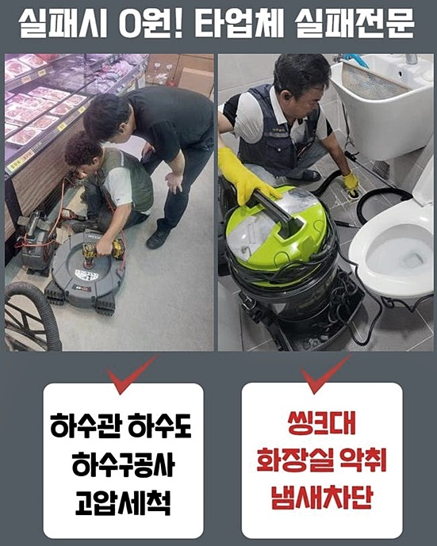
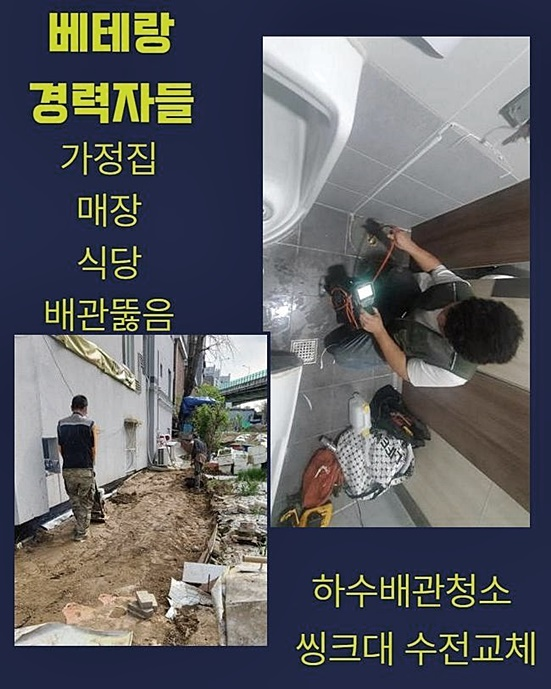
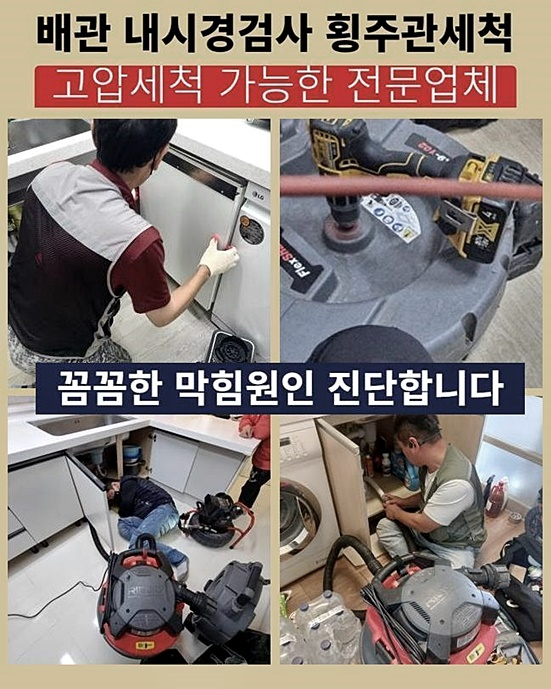
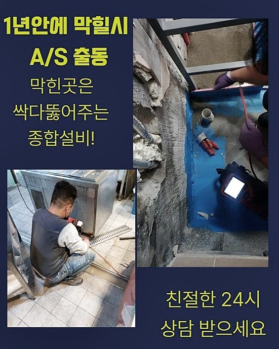
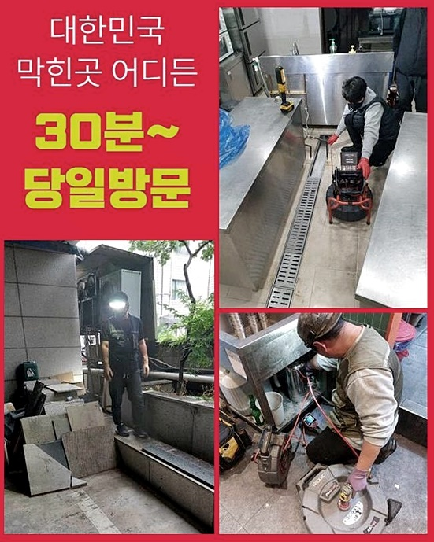
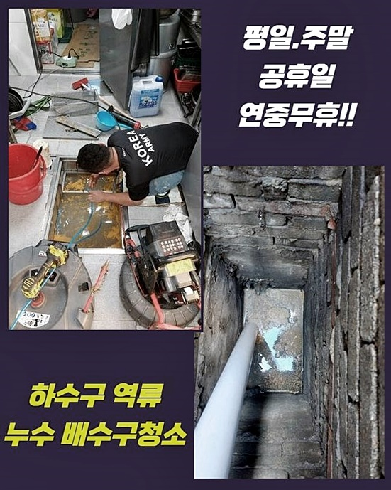
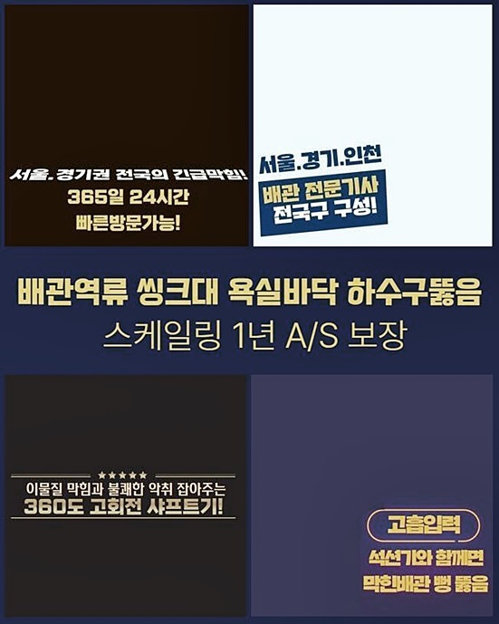

🏠 구리시 인창동세탁실역류 동구동 하수구청소장비 배관뚫는업체
용인 싱크대막힘 전문 시공 후기

📋 작업 개요
- 위치: 용인
- 서비스 유형: 싱크대막힘, 하수구막힘, 배관막힘, 집수정막힘, 역류해결, 뚫는업체, 배관청소, 고압세척
- 작업 일시: 2024. 7. 3. 9:37
- 업체명: 하수구수사대 (010-5615-2118)
🔍 문제 상황
구리시 인창동세탁실역류 동구동 하수구청소장비 배관뚫는업체
배수관에 문제들이 생겨날 시 허둥지둥 하게됩니다
지금부턴 막힘과 관련해 말씀드리고자하니 정독해주시면 이점이 많을것이라 장담해요!
실생활중에 쓰는 수도의 경우 개별로 흘러나가는게 아니고 그 끝의 메인배수관으로 향해가기위해 구조적으로 설계되어있고 집수설비로 빠지죠
이런 까닭에 겉에있지 못한다고해도 배수관은 지면하단에 복잡하게 설계되어있으므로 막혀버리는 문제들이 생겼을 때 여기저기에 슬러지가 쌓이게되어 피해들이 발생될테죠
심할땐 어느 지점에서 물들을 틀면 예상치 못한 지점에서 물이 솟구친다거나 양 배수구 전체적으로 빠지지못하는 사태가 벌어지기에 이땐 전문업체들과 안정적으로 풀어나가는게 좋아요
앞으로 주방에 증상들이 생겨버린 상황으로 사용 중에 세탁실에도 피해들이 생겨 저희들에게 재빨리 내방해달라 문의하셨습니다
방문드려 관찰하니 싱크대 하수하수도는 다용도실 하수관이 접촉이 되있었고 세탁실까지의 피해들로 거듭된것으로 생각했죠

🔎 원인 분석
💡 전문가 진단: 정밀 진단 장비를 사용하여 슬러지의 고착 여부를 판명하고 타격/세척 작업을 실시했습니다.
단지 배수구로 물이 안빠져 불편들이 불어난것인데 시간의 흐름에 따라 이물질이 점차 심층부로 내려가 쌓여버려서 여타 설비들이 막히는 상황이 있답니다
테스트과정을 위하여 씽크대배수구로 수돗물을 틀어보았더니 슬러지들과 하수가 다용도실로 솟아오르는것을 파악하게 되었고 다용도실 문제의 원인들이 주방배수구와 연관성이 있는걸 확인했죠
의뢰인은 주방배수구와 세탁기 모집수정으로에서 악취자체가 발생되어 생활양식 선에도 불편들을 겪었기에 적절히 클린액들을 이용하며 급한 불을 가라앉혔다고 합니다
겉으로 들여다봤을때도 배수로에 오염원이 쌓이게되서있는데 싱크볼을 쓰며 반복적으로 역류해서 밑으로 빠져야하는 잔해물들이 내려가지를 못하고 역으로 분출하게된 장소였습니다
이와같은 구조라면 집합건물에서 흔하게 볼 수 있으나 이처럼 동시에 예상못한 피해들이 발생한다면 끝도없이 생활양식에서 불편들을 양산시키게되요
의뢰인께 문제의 내용을 상세하게 설명하고 지금의 상태를 해결하도록 장비를 사용해 제대로 된 수리에 착수했습니다
첫번째로 석션장치로 고인 오물들을 빨아들여 세척하는 단계를 거쳤으며 석션통으로 시원히 제거되는 소리도 들었죠
배수구의 틈을 막아주고 흡입해주니 강력한 흡입력으로 심부에 있었던 잔여물을 세척했는데요

🔧 작업 과정
해당 사례처럼 문제였던 배수라인에서 석션장비로 물길을 넓혀주면 내시경기기를 가용한 다음 배관의 상황을 세심하게 확인합니다
무슨 종류의 이물이 막히게되었으며 관로에 오염물이 쌓이게되며 표면에 파손이 없는지 다양한 방면으로 체크해야해요
내시경장치를 이용하여 들여다보았더니 씽크대다수에서 연장된 관로와 세탁기가 있는 곳의 라인까지 이물질이 누적되어 막힌 상태였고 끈끈하게 여타 이물질과 몸집을 키워나가고 단단해져 고착된 이물까지 상당수였고 막히는 까닭을 꼼꼼히 관찰했어요
완성도 있는 결과 보장을 해줄 기반적 측면으로 샤프트장비를 준비하고 해당 기계의 노즐들을 투입시켜 끝에 달린 체인들로 흡착물을 없애주기 시작했죠
해당 장소는 세탁실과 주방라인들이 연결된 상태이므로 분쇄작업 후엔 석션장치를 통하여 떠다니는 찌꺼기까지 문제될 수 없게 심층부도 청소를 이어갔어요
해당 과정에서는 각 배관에서 장비들을 써서 이물들을 제거시켜줬으므로 어렵지않게 주방과 세탁실의 문제들을 시정했고 깊은곳도 깔끔해졌고 긴 시간동안에는 막히는 건 우려는 할 필요 없습니다
저희들이 쓰는 샤프트의 경우 케이블자체가 얇게 되어있고 잘 휘어지기에 굴곡졌거나 꺾여진 부분도 원활히 투입되는 까닭에 찾아뵈었을 시 필수적으로 이용되는 장비죠
내부가 좁은 구간이여도 노즐들을 넣어줄만한 공간들이 확보되면 얼마든지 운용될 수 있어서 세척에 앞서서 점검불가 상태가 펼쳐질까라는 걱정을 느끼지않게 해결해드려요
샤프트에 드릴들을 결합해 청소가되기에 서둘러 회전운동을 하는 노커가 흡착물을 말끔히 사라지게 만들기에 내방드린 날짜에 고민을 해소시켜드립니다
끝까지 세척작업을 끝마치고 제거된 오염원을 관찰했는데 여지껏 배관 쌓인 잔해물로 인하여 통수가 안되는 상황과 악취들로 인해서 불편이 이만저만이 아니었겠구나 싶었죠
지금의 집으로 옮긴게 최근이라고 했는데 관로들은 건설 당시로부터 사용되기에 앞서서 깨끗히 쓰셨는지 모르기에 배수관의 상태에 대해서는 전문진도 예측할 수 없습니다
그러나 배수관에 피해가 도래하기전 발생되는 다양한 징후를 살피면서 관리하셔서 문제들에 대비해주는게 우선이라고 할수있는데요
작업이 잘되었는지 보려고 싱크대쪽으로 수돗물을 담아서 빠르게 배출되는지 체크하고 마무리들을 진행시켰습니다


✅ 작업 완료
물이 안빠지는건 가지각색으로 막히게되는 사안이므로 이런 피해들이 보일땐 업체들과 신속히 해결을 꾀해보세요
피해가 발발했을 경우 여러분이 계시는 장소로 달려가는 저희들을 잊지말아주시고 나중에 증상들이 생겼을 때 찾아주실때 오차없이 시공해드리겠습니다
장소와 상관없이 한시간 안팎으로 찾아뵙는 것이 원만히 진행되고 깔끔한 시공으로 좋은 결과들을 선사하니 연락주세요!
혹시나 궁금증이 있으시면 부담없이 질의해주세요!




⚠️ 주방 싱크대 배관 막힘 예방 수칙
- ✅ 기름기가 묻은 식기나 프라이팬은 설거지 전 키친타올로 반드시 기름때를 닦아내세요.
- ✅ 주기적으로 싱크대 개수대에 뜨거운 물을 가득 받아 한 번에 내려 배관 내부 기름을 씻어내세요.
- ✅ 배수구 거름망을 미세한 필터로 사용하시고 음식물 찌꺼기가 틈으로 새어 들지 않게 관리하세요.
- ✅ 베이킹소다와 식초를 뜨거운 물과 함께 일주일에 한 번씩 부어주면 배관 살균과 막힘 예방에 좋습니다.
💡 핵심 정리
- 확실한 장비 작업(내시경 점검 및 샤프트 스케일링)으로 원인을 뿌리 뽑습니다.
- 작업 후 1년 이내에 동일한 부위 재발 시 100% 무상 A/S 서비스를 보장합니다.
- 서울 · 경기 · 인천 전 지역에 24시간 언제든 긴급 출동할 수 있도록 항시 대기 중입니다.
❓ 자주 묻는 질문 (FAQ)
🚨 용인 싱크대막힘 문제로 고민이신가요?
정확한 원인 진단과 확실한 시공으로 재발 없는 해결을 약속드립니다.
24시간 긴급 출동 | 서울 · 경기 · 인천 전지역 | 1년 내 재발 시 무상 A/S